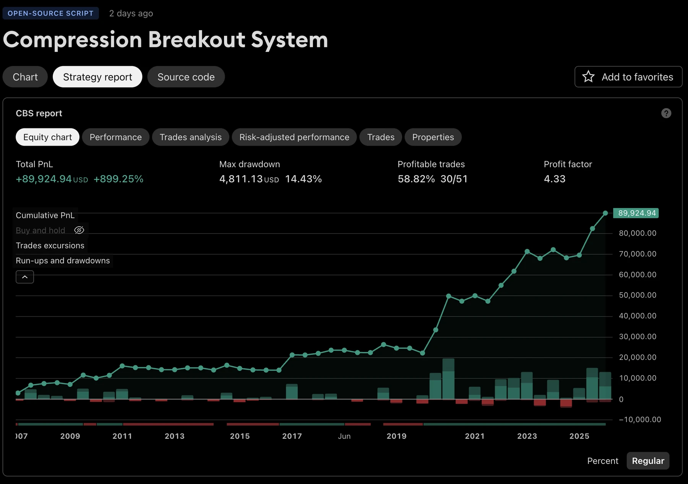
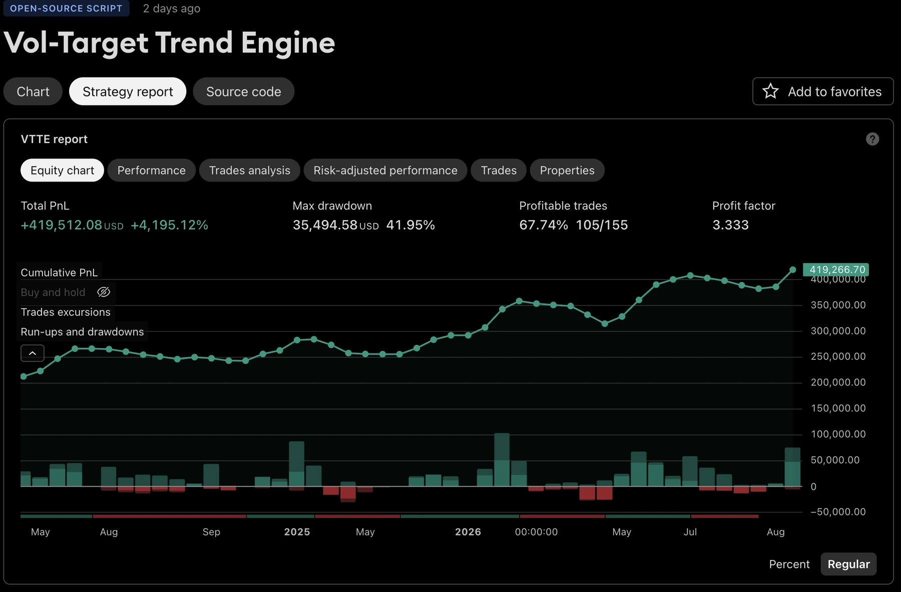
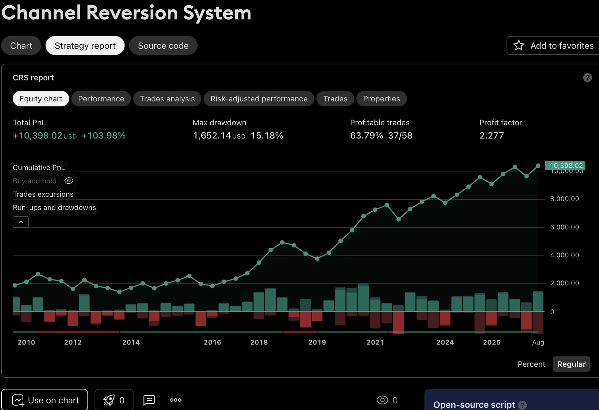

The method is
the differentiator.
Four original trading systems, designed, coded and then tested to destruction. The evidence is the frozen-parameter cross-validation, the documented miss, the ~30 rejected experiments with measured results, and the fact that three are published as open-source code, readable and reproducible by anyone.
The tester output, as published
Three of the four systems are published as open-source Pine Script v6. These are their TradingView Strategy Tester reports — the same numbers any reader gets by loading the script and running it on the stated symbol and window.



TradingView Strategy Tester · daily bars · 0.05% commission per side · slippage modeled · $10,000 initial capital. Re-run them from the published scripts.
Return per unit of risk
Every strategy is measured against the S&P 500, the Nasdaq-100 and the Dow over that strategy's own window, on total-return terms with dividends reinvested. Index figures are computed from SPY, QQQ and DIA adjusted closes, retrieved 2026-08-19.
Up and to the left is better: more compound growth for less peak-to-trough loss. Filled points are the strategies; hollow points are the index funds.
| Total return | CAGR | Max drawdown | CAGR per unit of drawdown | |
|---|---|---|---|---|
| Compression Breakout System | +899.3% | 11.25% | 14.4% | 0.78 |
| Nasdaq-100 | +2,030.2% | 15.20% | 53.4% | 0.28 |
| S&P 500 | +847.4% | 10.96% | 55.2% | 0.20 |
| Total market | +853.5% | 10.99% | 55.5% | 0.20 |
| Dow | +699.9% | 10.09% | 51.9% | 0.19 |
| Total return | CAGR | Max drawdown | CAGR per unit of drawdown | |
|---|---|---|---|---|
| Vol-Target Trend Engine | +4,195.1% | 25.59% | 42.0% | 0.61 |
| Nasdaq-100 | +1,791.3% | 19.48% | 35.1% | 0.55 |
| S&P 500 | +853.0% | 14.63% | 33.7% | 0.43 |
| Total market | +825.5% | 14.42% | 35.0% | 0.41 |
| Dow | +647.0% | 12.95% | 36.7% | 0.35 |
| Total return | CAGR | Max drawdown | CAGR per unit of drawdown | |
|---|---|---|---|---|
| Channel Reversion System | +104.0% | 2.64% | 15.2% | 0.17 |
| Nasdaq-100 | +1,564.3% | 10.79% | 83.0% | 0.13 |
| S&P 500 | +860.3% | 8.59% | 55.2% | 0.16 |
| Dow | +871.8% | 8.64% | 51.9% | 0.17 |
82,112 backtest runs
The published configurations are what survived. Reaching them meant enumerating the parameter space rather than hand-tuning toward a number — every run below is a saved result set, not an estimate.
| Sweep | Runs | What varied |
|---|---|---|
| Mechanics enumeration | 60,480 | Entry threshold, lookback window, stop distance, target style, target multiple, breakeven arm, trades per day, session window — swept jointly |
| Strategy-family sweep | 3,448 | Three families (fade, opening-range breakout, trend) across two timeframes, four thresholds, four lookbacks, eight stop configurations, three sessions, two exit styles |
| Joint mechanics space | 2,592 | Interaction effects between mechanics knobs held against each other rather than one at a time |
| Placebo grid | 14,496 | A 48-configuration grid re-run across 300 synthetic markets built by permuting bar order within each session |
| Mechanics validation | 1,080 | Median-optimal configuration checked against the live configuration, knob by knob |
| Cross-timeframe | 16 | The surviving configuration re-run on independent bar sizes |
On top of the backtests, 40,000 Monte Carlo resamples — 10,000 paths for each of four frozen configurations — resample the daily result series to produce distributions of Sharpe, net result and drawdown rather than single point estimates. Selection is made on the median of a parameter region rather than the best cell, so a configuration is only adopted when the whole neighbourhood around it works.
What each system is actually exploiting
Each targets a different, nameable market behaviour. None of them is a curve fit looking for a story.
Volatility is cyclical
Quiet periods precede violent ones. The system waits for Bollinger band width to fall into the bottom quartile of its own trailing six-month distribution, then buys the range break on above-average volume, in trend only. The width filter is a percentile rank rather than a fixed threshold, so it self-normalises across symbols and volatility regimes — which is why frozen parameters transfer to other names at all. Expansion legs are long-tailed, so the exit is a trailing stop rather than a target.
Leverage decay is quadratic in volatility
A 3x product compounds beautifully in calm uptrends and destroys capital in volatile ones. The engine predicts nothing. It gates exposure to the uptrend regime and sets position size from realised volatility, so exposure falls mechanically as volatility rises — and volatility clusters, which means it is already smaller before a crisis matures. The edge is the sizing policy, not a signal.
Pullbacks inside uptrends are bought
Within an established uptrend, dips to the bottom of the recent range are statistically accumulated. The system trades that and nothing else: a 50-day Donchian channel maps the range, the lower quarter is the entry zone, and entries exist only above the 200-day average. The profit target is the channel midline, because the reversion to the middle is the reliable part and everything past it is variance.
Money flow leads price on swing horizons
A composite of money-flow strength and volatility calm, each expressed as a one-year percentile so the score self-normalises. v1 worked but carried a heavy left tail. v2 came from a trade-by-trade autopsy of every loser: a trend filter that blocks bear-market rally buys, a volatility-spike exit that fires faster than the score can fall, and a hard disaster stop. Same winners, smaller disasters.
The work in progress
Each system has a specific next test, and each is chosen because it is the one most capable of changing the answer.
Published, readable,
reproducible.
Most strategy write-ups end at a screenshot. The code here is public. The chain runs in three steps, and every link is independently verifiable.
A figure stated on this page, with its market, window, cost model and drawdown attached.
The strategy published as open-source Pine Script v6 on TradingView — full source readable, full methodology in the description.
Anyone loads the script, sets the same commission and slippage, and gets the same Strategy Tester output on the same symbol and window.
Frozen parameters, and what
happened when they moved
Nothing below was re-tuned between cells. Parameters were fixed on the primary market, then run once on everything else.
| Test | Window / condition | Net | PF | Win | Max DD |
|---|---|---|---|---|---|
| Split-sample, first half | 2005 – 2015 | +164% | 3.35 | 64% | 14.4% |
| Split-sample, second half | 2015 – 2026 | +293% | 4.97 | 58% | 10.3% |
| Slippage stress | 5 ticks/side — 5× modeled | +256% | 4.77 | 63% | 10.7% |
| Cross-symbol transfer | NVDA, frozen params | +658% | 3.26 | 45% | — |
| Cross-symbol transfer | MSFT, frozen params | +46% | 1.32 | 37% | the miss |
| Cross-symbol transfer (CRS) | SPY, frozen params | +67% | 1.80 | 62% | 8.5% |
The split holds across different markets
The two decade halves contain genuinely different conditions — the GFC recovery and the 2011/2015 corrections against the 2018, 2020 and 2022 shocks and two melt-ups. Positive with healthy profit factors in both means the edge is not a single-era artifact.
CRS spans the dot-com crash and the GFC
QQQ from March 1999 to August 2026 — a window containing the dot-com collapse and the 2008 crisis. Worst drawdown across all 27 years: 15.2%, while sitting in cash roughly 80% of the time. That combination is unusual, and it is a capital-efficiency profile rather than a return one.
Four return sources
Each system targets something structurally different. Three link to their published open-source code.
Compression Breakout System
Bollinger-width percentile squeeze → range break on volume → chandelier trail, risk-sized off the stop distance. The width filter is a percentile rank rather than an absolute threshold, which is what makes the frozen-parameter cross-symbol tests meaningful at all.
Vol-Target Trend Engine
A 200-day regime gate plus volatility-targeted exposure on a 3x ETF — the vol-control-index architecture in about 60 lines. There is no predictive signal to overfit; the entire edge is the sizing policy. Raw buy-and-hold TQQQ earns more, if a holder survives two >80% drawdowns — the note makes that comparison rather than hiding it.
Channel Reversion System
Buys weakness at Donchian support inside uptrends only; exits at the channel midline. Mean reversion traded with the prevailing trend, never against it. It does not beat buy-and-hold on raw return — a system long 20% of the time cannot outrun a secular bull, and the note says so plainly.
QV Signal Pro v2
Rebuilt after a trade-by-trade autopsy of every v1 loss. The improvement is risk-shaped rather than return-shaped: same winners, smaller disasters — the kind of improvement that does not depend on the future producing more upside than the past. Not yet published as open source.
Roughly thirty experiments,
killed with numbers
Each research note carries its own rejected experiments with the measured results that killed them. These four shaped everything else.
Reaction speed usually loses
A faster de-risking variant of VTTE more than doubled turnover (155 → 376 events), sold volatility spikes at their lows, and made maximum drawdown worse (41.9% → 49.6%) while cutting net return from +3,862% to +2,158%. Slow rebalancing is a feature.
In a reversion system, the target is the edge
Replacing CRS's channel-midline target with a 2.5-ATR trail kept net return identical but dropped the profit factor 2.28 → 1.79, the win rate 64% → 47%, and pushed drawdown 15% → 19%.
Leverage does not bolt on
Running CRS's identical signals on a 3x ETF collapsed the profit factor to 1.43 and tripled max drawdown to 43%. Triple leverage triples the noise around a structural stop. Leverage belongs in systems designed for it — which is what VTTE is.
Sizing turns a signal into a system
CBS's identical signal stack sized all-in produced a bigger headline (+1,040%) and an 89% drawdown. Fixed-fractional risk sized off the stop cut the largest loss from $4,720 to $1,366 and raised the profit factor 2.87 → 3.16 — on exactly the same signals.